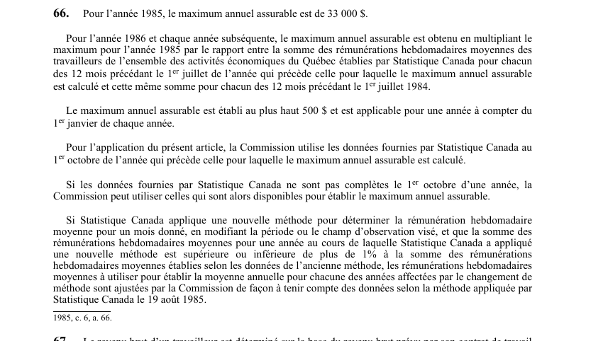

art-66-LATMP : maximum annuel assurable
Fixe le plafond de salaire sur lequel toutes les indemnités de la loi sont calculées, et la mécanique qui le réindexe chaque année. Visé : CNESST · Nature : règle de calcul.
- Point d'ancrage : 33 000 $ pour l'année 1985.
- Indexation depuis 1986 : le montant de 1985 est multiplié par le rapport entre la somme des rémunérations hebdomadaires moyennes des 12 mois précédant le 1er juillet de l'avant-dernière année et cette même somme pour les 12 mois précédant le 1er juillet 1984.
- Le résultat est établi au plus haut 500 $ et s'applique à compter du 1er janvier de chaque année.
- Source des données : Statistique Canada au 1er octobre de l'année qui précède ; si elles sont incomplètes à cette date, la Commission utilise celles alors disponibles.
- Garde-fou méthodologique : si un changement de méthode de Statistique Canada fait varier la somme des rémunérations de plus de 1 %, la Commission ajuste les moyennes des années touchées.
🌐 LegisQuébec · 📄 PDF officiel (page 24)
Texte officiel
Pour l’année 1985, le maximum annuel assurable est de 33 000 $.
Pour l’année 1986 et chaque année subséquente, le maximum annuel assurable est obtenu en multipliant le maximum pour l’année 1985 par le rapport entre la somme des rémunérations hebdomadaires moyennes des travailleurs de l’ensemble des activités économiques du Québec établies par Statistique Canada pour chacun des 12 mois précédant le 1 juillet de l’année qui précède celle pour laquelle le maximum annuel assurable est calculé et cette même somme pour chacun des 12 mois précédant le 1 juillet 1984.
Le maximum annuel assurable est établi au plus haut 500 $ et est applicable pour une année à compter du 1 janvier de chaque année.
Pour l’application du présent article, la Commission utilise les données fournies par Statistique Canada au 1 octobre de l’année qui précède celle pour laquelle le maximum annuel assurable est calculé.
Si les données fournies par Statistique Canada ne sont pas complètes le 1 octobre d’une année, la Commission peut utiliser celles qui sont alors disponibles pour établir le maximum annuel assurable.
Si Statistique Canada applique une nouvelle méthode pour déterminer la rémunération hebdomadaire moyenne pour un mois donné, en modifiant la période ou le champ d’observation visé, et que la somme des rémunérations hebdomadaires moyennes pour une année au cours de laquelle Statistique Canada a appliqué une nouvelle méthode est supérieure ou inférieure de plus de 1% à la somme des rémunérations hebdomadaires moyennes établies selon les données de l’ancienne méthode, les rémunérations hebdomadaires moyennes à utiliser pour établir la moyenne annuelle pour chacune des années affectées par le changement de méthode sont ajustées par la Commission de façon à tenir compte des données selon la méthode appliquée par Statistique Canada le 19 août 1985.
Texte de l’article 66 LATMP, extrait de la couche texte du PDF officiel (page 24), sans OCR ni retouche. La capture ci-dessous et le PDF font foi.
{kind=link}

Toucher l'image pour l'agrandir🔗 Ouvrir a cette page : LATMP.pdf : page 24 · texte a jour au 20 février 2024
- 1985 : 33 000 $ (montant de base).
- Arrondissement : au plus haut 500 $.
- Période de référence : 12 mois précédant le 1er juillet.
- Date de disponibilité des données : 1er octobre.
- Seuil d'ajustement pour changement de méthode : 1 %.
Voir aussi
Pages qui pointent ici (4)
- art-178-LATMP : peut octroyer une subvention Recueil législatif
- art-21-LATMP : modalités et montant de l'inscription Recueil législatif
- art-289.1-LATMP : salaire brut des travailleurs de la construction Recueil législatif
- art-62-LATMP : calcul du salaire net (retenues) Recueil législatif